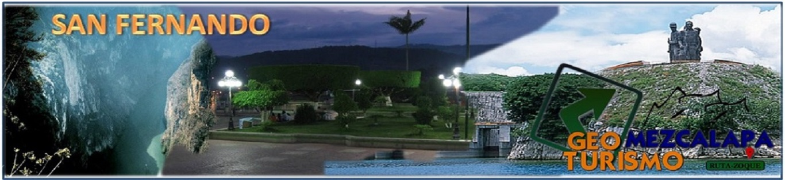
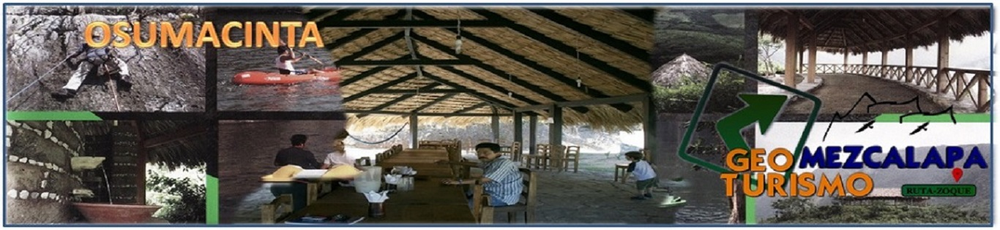
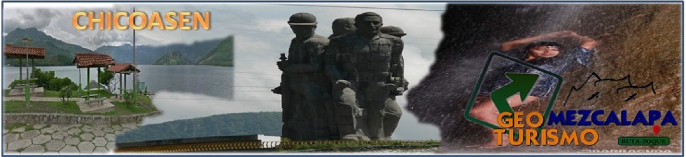
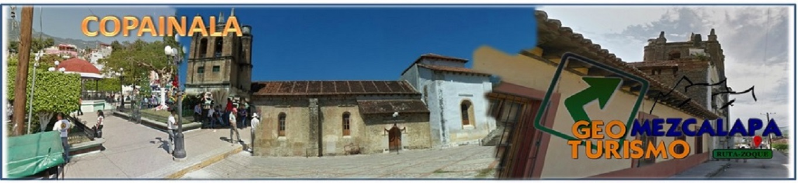
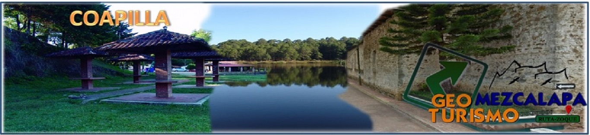
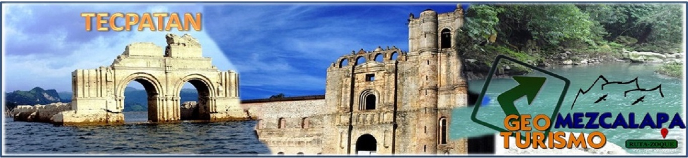
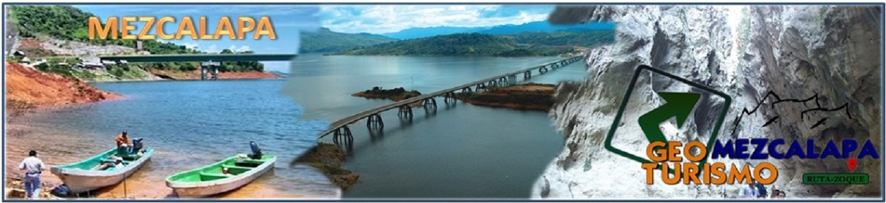
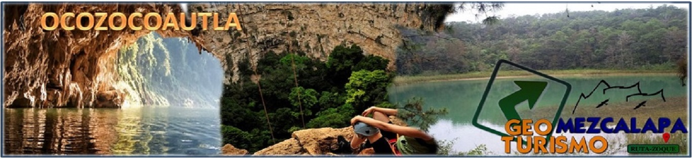
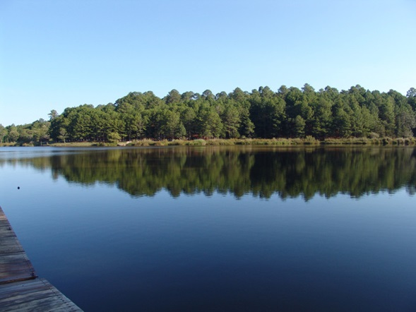
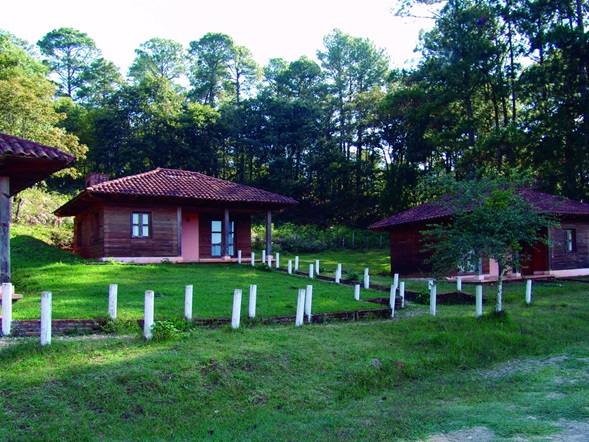

El nombre de Coapilla significa "Corona de Cerros". Coapilla es un pequeño pueblo perteneciente al estado de Chiapas. Se localiza entre el centro y norte del estado. La distancia aproximada, partiendo de la ciudad capital de Tuxtla Gutiérrez, es de 98 kilómetros y el único medio de transporte es el terrestre.
La población se dedica a la agricultura. La tierra es adoc a la producción de café, chayotes y aguacates, además de zarzamora, durazno y fresa, sin embargo, la gente se dedica especialmente a la siembra de maíz y frijol como medios de autoconsumo. El año2000 aproximadamente, se concedió un permiso de tala de árboles, dejando como saldo, cientos de hectáreas deforestadas. El pino es un árbol que proporciona buena fuente de recursos económicos para algunas personas de este municipio ejidal, que por su condición no permite que todos aprovechen los beneficios, aunque los ejidatarios invaden terrenos de los campesinos posecionarios que no son ejidatarios y explotan sus parcelas, destrozando alambrados y como resultado de la deforestación de árboles ancestrales, se pierden vertientes y se infertiliza a la tierra.
Hacia el año 300 de nuestra era, los zoques se instalaron en la región. Posteriormente arribaron los olmecas, como lo atestiguan algunos vestigios arqueológicos que se encuentran en el municipio. En 1524 los zoques de la región fueron repartidos entre los encomenderos de Coatzacoalcos, por lo que la población decreció notablemente; en 1778, se levantó un censo que arrojó una población de 118 zoques; en 1826, se realizó la primera dotación ejidal, la cual se amplió en 1849; el 19 de agosto de 1880, se rectificó el plano representativo del pueblo; el 31 de julio de 1909, se inició la construcción de la primera escuela oficial; el 13 de noviembre de 1882, se creó el Departamento de Mezcalapa, del cual pasó a depender.
